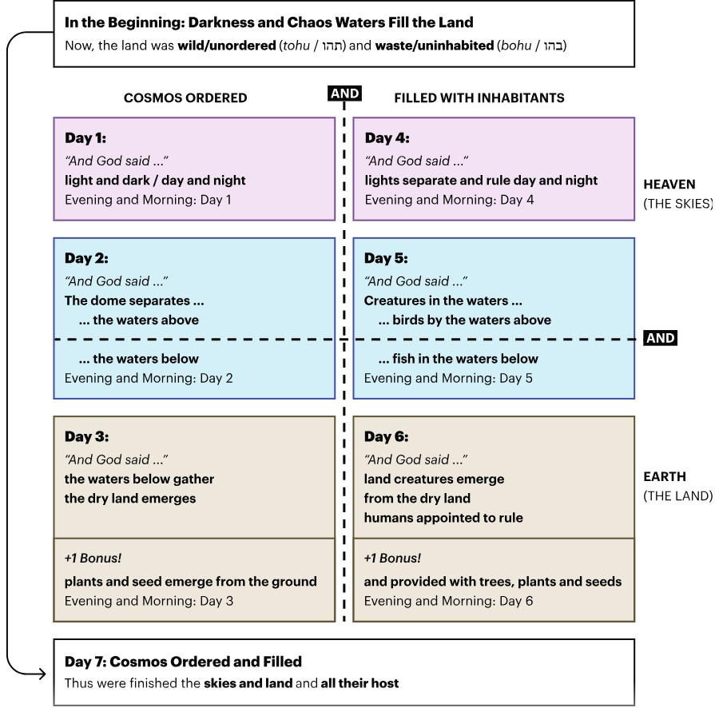

Genesis 1
Genesis 1:1
A more helpful English word for “earth” in the case of Genesis 1:1 is “land”, and a more helpful word for “heavens” is “skies”.
This verse is like a heading. The story narrative sequence actually begins in verse 2.
Genesis 1:2-5
Now, the land was wild and waste (tohu va-vohu / תהו ובהו) and darkness was over the face of the deep abyss (tehom / תהום) but the breath of Elohim (invisible energy) was hovering over the face of the waters (hamayim / המים).
When the ruakh (Spirit) of Elohim is present, the abysmal disorder is neutralized and can become a vehicle of life.
The creation of light and its separation from darkness generates the fundamental order of time that governs the rest of the chapter—day and night.
Genesis 1:6-31
Literary origami: Genesis 1 could be folded along two axes. When you fold it along the triads (Day 1-3 along Days 4-6), you get order and inhabitants.
When you fold it on a vertical axis, you get heaven and earth. Days 1 and 4 are heaven, Days 2 and 5 are the in-between, Days 3 and 6 deal with the land.
A creature that is one and simultaneously more than one is an integral part of what it means to be the image of God (Genesis 1:27).
Genesis 1 gives us the ideal portrait of God's creation.